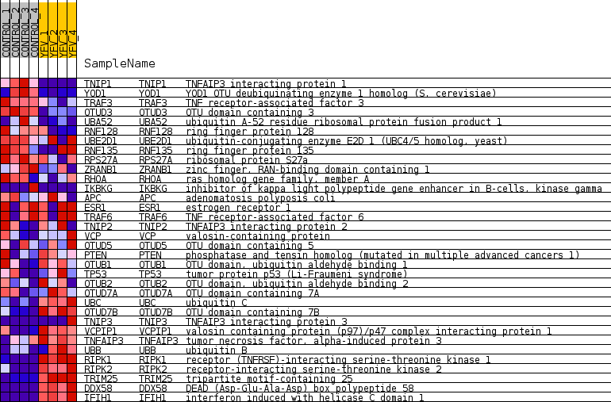
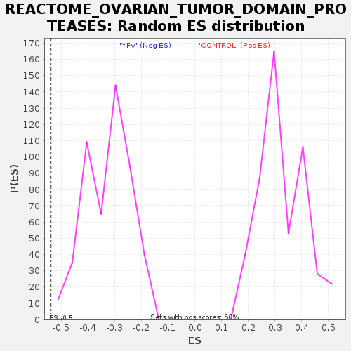

Profile of the Running ES Score & Positions of GeneSet Members on the Rank Ordered List
| Dataset | MATRIZ_GSE99081_collapsed_to_symbols.gsea_CLASE_99081.cls#CONTROL_versus_YFV |
| Phenotype | gsea_CLASE_99081.cls#CONTROL_versus_YFV |
| Upregulated in class | YFV |
| GeneSet | REACTOME_OVARIAN_TUMOR_DOMAIN_PROTEASES |
| Enrichment Score (ES) | -0.53956956 |
| Normalized Enrichment Score (NES) | -1.638069 |
| Nominal p-value | 0.0 |
| FDR q-value | 0.05301765 |
| FWER p-Value | 0.818 |
| SYMBOL | TITLE | RANK IN GENE LIST | RANK METRIC SCORE | RUNNING ES | CORE ENRICHMENT | |
|---|---|---|---|---|---|---|
| 1 | TNIP1 | TNFAIP3 interacting protein 1 | 7 | 2.016 | 0.0784 | No |
| 2 | YOD1 | YOD1 OTU deubiquinating enzyme 1 homolog (S. cerevisiae) | 107 | 1.260 | 0.1216 | No |
| 3 | TRAF3 | TNF receptor-associated factor 3 | 336 | 0.924 | 0.1437 | No |
| 4 | OTUD3 | OTU domain containing 3 | 700 | 0.742 | 0.1503 | No |
| 5 | UBA52 | ubiquitin A-52 residue ribosomal protein fusion product 1 | 1969 | 0.488 | 0.0912 | No |
| 6 | RNF128 | ring finger protein 128 | 2103 | 0.468 | 0.1013 | No |
| 7 | UBE2D1 | ubiquitin-conjugating enzyme E2D 1 (UBC4/5 homolog, yeast) | 2350 | 0.433 | 0.1031 | No |
| 8 | RNF135 | ring finger protein 135 | 3113 | 0.331 | 0.0690 | No |
| 9 | RPS27A | ribosomal protein S27a | 4134 | 0.232 | 0.0151 | No |
| 10 | ZRANB1 | zinc finger, RAN-binding domain containing 1 | 4137 | 0.231 | 0.0240 | No |
| 11 | RHOA | ras homolog gene family, member A | 5701 | 0.098 | -0.0686 | No |
| 12 | IKBKG | inhibitor of kappa light polypeptide gene enhancer in B-cells, kinase gamma | 5852 | 0.088 | -0.0744 | No |
| 13 | APC | adenomatosis polyposis coli | 5964 | 0.079 | -0.0782 | No |
| 14 | ESR1 | estrogen receptor 1 | 9481 | -0.001 | -0.2951 | No |
| 15 | TRAF6 | TNF receptor-associated factor 6 | 9581 | -0.007 | -0.3009 | No |
| 16 | TNIP2 | TNFAIP3 interacting protein 2 | 9931 | -0.022 | -0.3216 | No |
| 17 | VCP | valosin-containing protein | 10836 | -0.088 | -0.3739 | No |
| 18 | OTUD5 | OTU domain containing 5 | 10908 | -0.095 | -0.3746 | No |
| 19 | PTEN | phosphatase and tensin homolog (mutated in multiple advanced cancers 1) | 11565 | -0.152 | -0.4092 | No |
| 20 | OTUB1 | OTU domain, ubiquitin aldehyde binding 1 | 11568 | -0.152 | -0.4033 | No |
| 21 | TP53 | tumor protein p53 (Li-Fraumeni syndrome) | 11764 | -0.171 | -0.4087 | No |
| 22 | OTUB2 | OTU domain, ubiquitin aldehyde binding 2 | 12305 | -0.225 | -0.4332 | No |
| 23 | OTUD7A | OTU domain containing 7A | 12459 | -0.239 | -0.4333 | No |
| 24 | UBC | ubiquitin C | 14182 | -0.479 | -0.5208 | Yes |
| 25 | OTUD7B | OTU domain containing 7B | 14191 | -0.481 | -0.5025 | Yes |
| 26 | TNIP3 | TNFAIP3 interacting protein 3 | 14303 | -0.499 | -0.4899 | Yes |
| 27 | VCPIP1 | valosin containing protein (p97)/p47 complex interacting protein 1 | 15108 | -0.656 | -0.5138 | Yes |
| 28 | TNFAIP3 | tumor necrosis factor, alpha-induced protein 3 | 15252 | -0.711 | -0.4948 | Yes |
| 29 | UBB | ubiquitin B | 15642 | -0.918 | -0.4829 | Yes |
| 30 | RIPK1 | receptor (TNFRSF)-interacting serine-threonine kinase 1 | 15848 | -1.206 | -0.4484 | Yes |
| 31 | RIPK2 | receptor-interacting serine-threonine kinase 2 | 15960 | -1.440 | -0.3989 | Yes |
| 32 | TRIM25 | tripartite motif-containing 25 | 16114 | -2.360 | -0.3161 | Yes |
| 33 | DDX58 | DEAD (Asp-Glu-Ala-Asp) box polypeptide 58 | 16212 | -4.043 | -0.1639 | Yes |
| 34 | IFIH1 | interferon induced with helicase C domain 1 | 16219 | -4.231 | 0.0012 | Yes |

